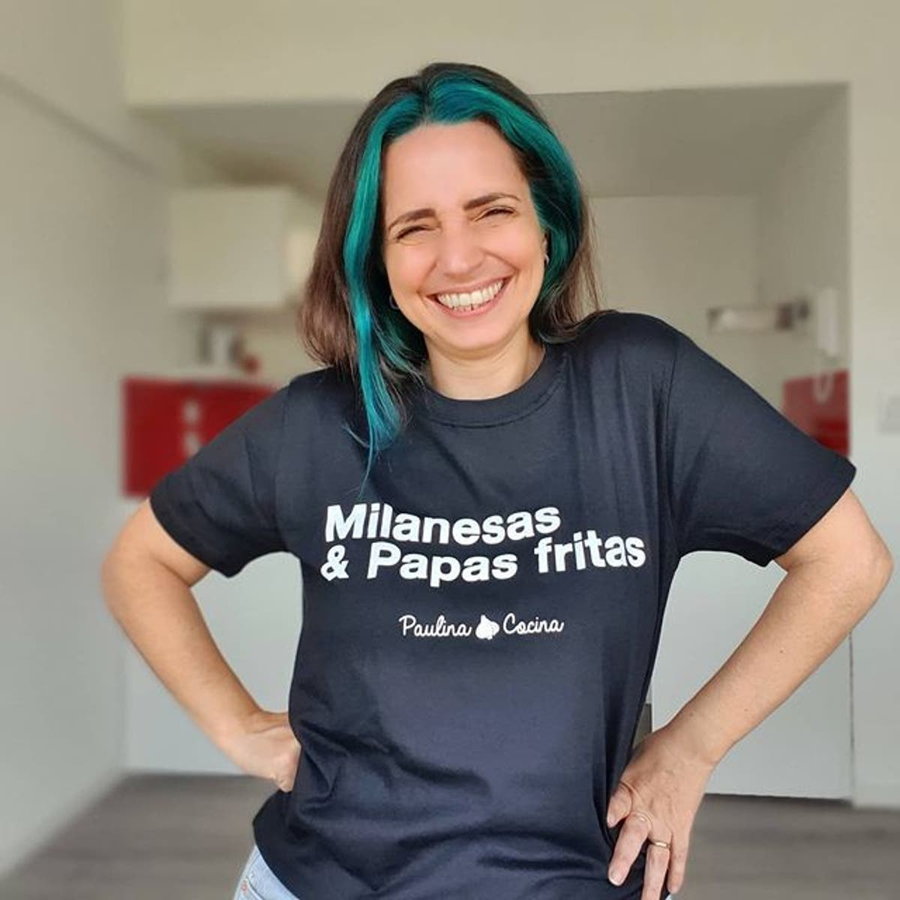

Carolina Puga
Cocino pero no soy cocinera. Paulina Cocina no es mi verdadero nombre, soy argentina y fue en el año 2008, mientras cursaba un doctorado en Sociología cuando decidí filmar un video cocinando un pastel de papas. Así fue como nació Paulina, quien hoy tiene mas de 3.000.000 de suscruptores en Youtube y casi lo mismo en Instagram o Facebook.